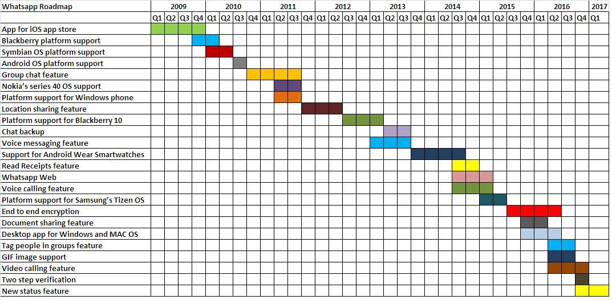
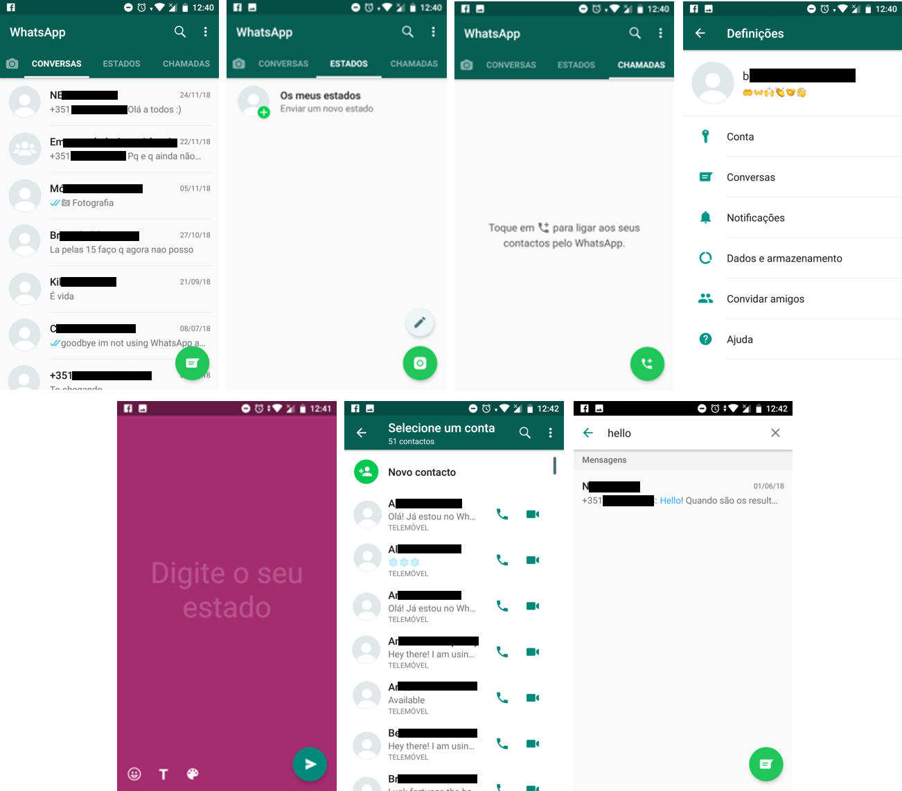

A aplicação é constituída por uma longa lista de funcionalidades direcionadas à experiência do utilizador. Estas são oferecidas através de uma interface simples e minimalista. Esta representa a vontade dos seus fundadores, mencionada no capítulo anterior, em construir uma aplicação que fosse útil, sem nenhuma restrição.
Com a sucessiva inclusão de novas funcionalidades, a interface sofreu sucessivas alterações ao longo dos anos, sem nunca se desviar do objetivo principal da aplicação, o de oferecer a mais pura experiência de envio de mensagens.
De seguida serão enumeradas e brevemente analisadas as funcionalidades presentes na aplicação, ao momento de escrita deste artigo, a sua interface gráfica e respetiva evolução.
Para fins analíticos, as funcionalidades serão divididas em dois tipos, com base no seu impacto global na utilização da aplicação, as principais e as secundárias.
As funcionalidades consideradas principais são o envio de mensagens instantâneas de texto, chamadas de voz, chamadas de vídeo, upload, envio e transferência de ficheiros, envio de mensagens em chats de grupo, e notificações de alerta semelhante à experiência de receção de uma SMS.
Analogamente, as funcionalidades secundárias, que complementam as restantes, são o controlo de privacidade, encriptação ponta a ponta, o WhatsApp Web, que permite que o utilizador use o WhatsApp no computador, através de um mecanismo de sincronização com a aplicação no telemóvel, a partilha de localização ao vivo, a possibilidade de introduzir fotos de perfil e um status, e a possibilidade de registo apenas com o número de telemóvel, sem necessidade de password. Hoje em dia a aplicação continua em desenvolvimento e é possível observá-lo em pequenas novas adições e atualizações a estas funcionalidades, a cada nova atualização da aplicação. Estes novos desenvolvimentos são frequentemente anunciados no blog do WhatsApp.
Estas funcionalidades não estiveram presentes na aplicação desde a sua criação, pelo que é possível analisar o progresso da aplicação com a contínua inclusão destas funcionalidades. A figura seguinte oferece uma perspetiva cronológica da contínua inclusão na aplicação de algumas das funcionalidades apresentadas neste artigo.
O WhatsApp foi concebido inicialmente como uma aplicação de atualização de estado para a plataforma IOS em que os utilizadores atualizariam o seu estado de modo a informar os seus contactos se estavam ocupados.
Em agosto de 2009 foi lançada a versão 2 da aplicação (WhatsApp 2.0) que introduziu o revolucionário mecanismo de envio de mensagens de texto instantâneas através da internet. Os primeiros desenvolvimentos da aplicação foram dedicados a torná-la multiplataforma, e a partir desse momento que o seu desenvolvimento foi orientado para o acrescentamento gradual de todas as funcionalidades já descritas, sempre com alguma atenção à entrada de novas plataformas no mercado de aplicações.
A 18 de janeiro de 2018 foi lançado o WhatsApp Business, uma aplicação para Android com as mesmas funcionalidades do WhatsApp, mas voltada para as empresas e para a interação entre estas e os seus clientes. Apesar de ainda ter sido lançada à pouco tempo, o WhatsApp Business já conta com mais de um quarto de milhão de downloads.
Figura 4.1: Cronologia de inclusão de funcionalidades na aplicação WhatsApp
Estão apresentadas na figura que se segues as várias páginas que constituem a aplicação WhatsApp. No canto superior está a home page da aplicação, na qual é possível ver uma lista de todos os grupos de chat recentes, desde chats de grupo a chats individuais, e um botão que permite ao utilizador enviar uma mensagem nova para qualquer contacto. Na barra de superior consta uma opção de procura e um menu que permite aceder às definições da aplicação. Na barra de navegação é possível alterar entre as “Conversas”, os “Estados” e as “Chamadas”. Esta barra constitui um simples, mas efetivo mecanismo de apresentação das principais funcionalidades principais da aplicação.
Figura 4.2: Interface gráfica da aplicação WhatsApp